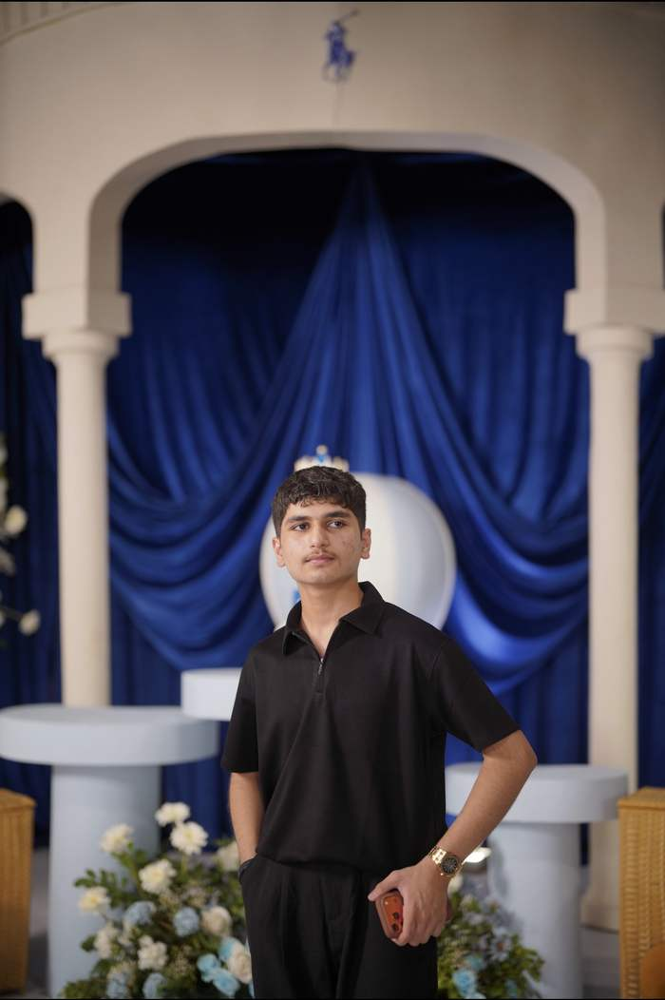
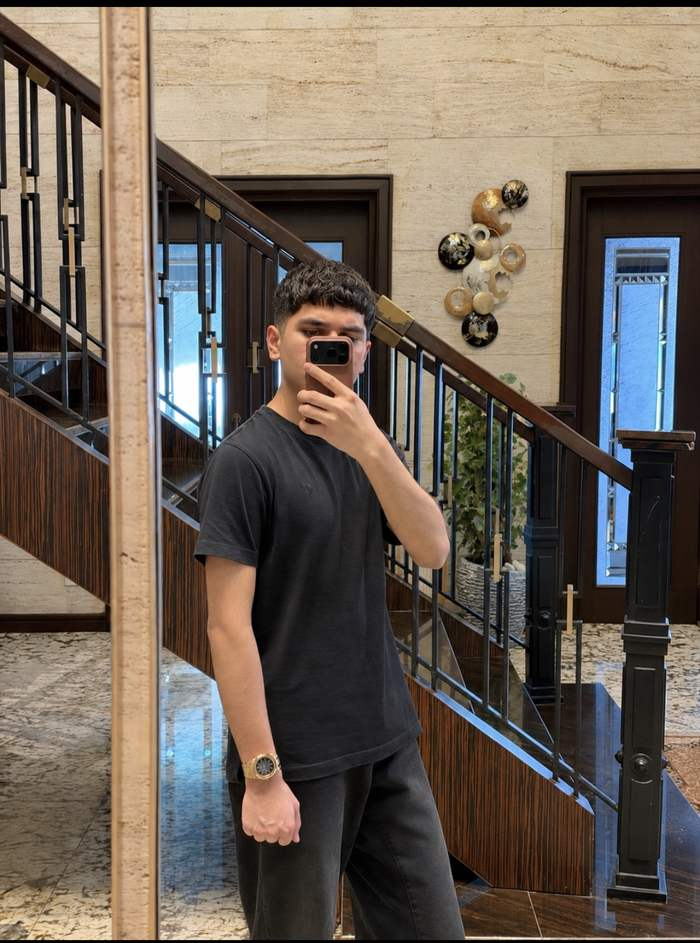

About me


I’m Ayan Latif, a 15-year-old student and aspiring IT professional. I’m curious about how technology works behind the screen, and I want to build the systems people rely on.
I like Information Technology, and I especially enjoy computational thinking: taking a hard problem, splitting it into parts, spotting patterns and writing clear steps to solve it.
I learn best by making things. Every page on this site is a way to practise a new idea.
How I think
Decomposition
Split a big problem into small parts that are easy to solve.
Pattern recognition
Look for what repeats, so one solution can be reused.
Abstraction
Ignore the details that don’t matter and keep the ones that do.
Algorithms
Write clear steps that anyone, or any computer, can follow.
Skills
- Information Technology
- Computational thinking
- Web basics
- Computer networks
- Problem solving
- Research
- Communication